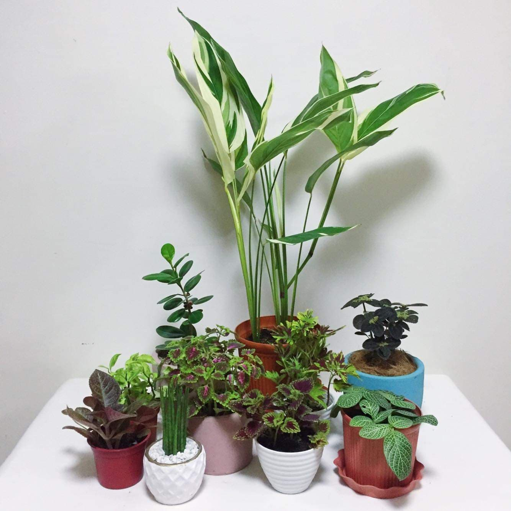
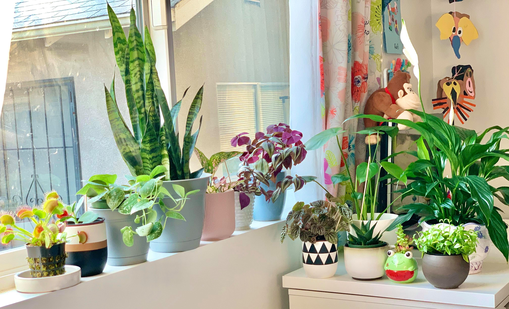
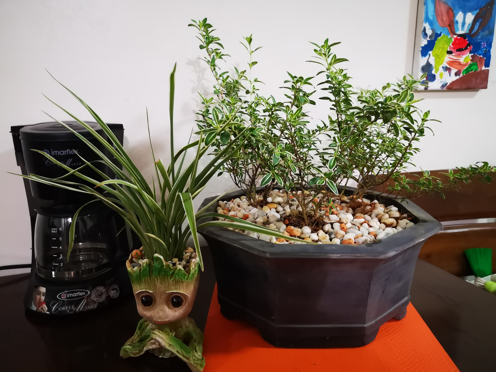
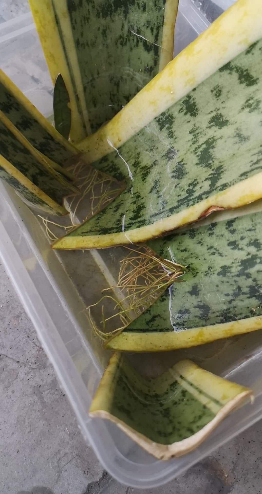
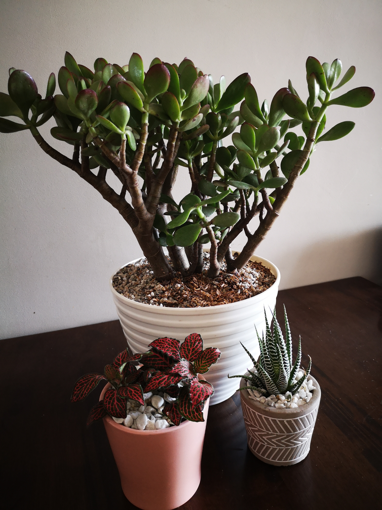
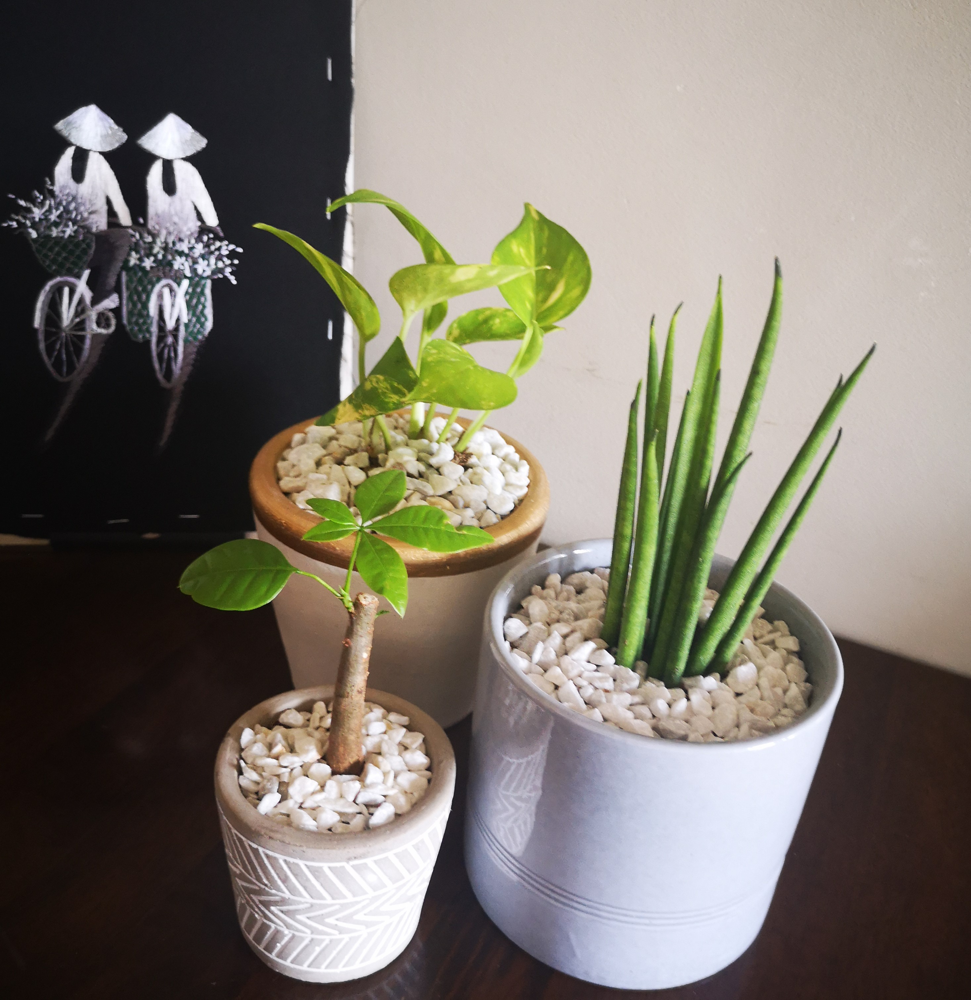
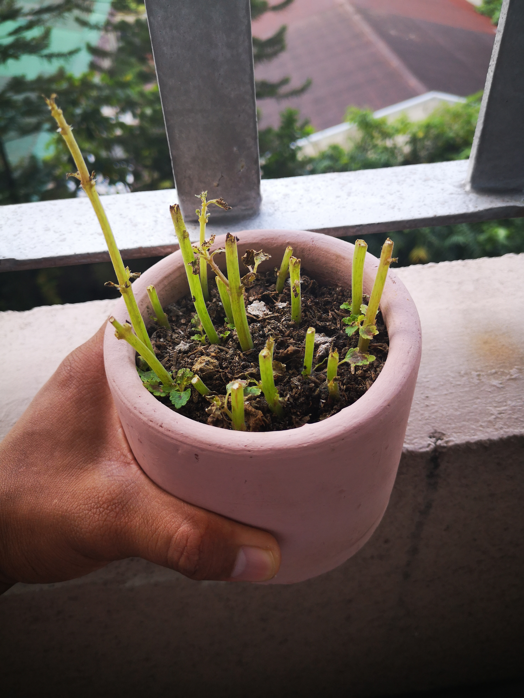

A happy plant family
At first, I tried with just one plant - the snake plant. But in just a
few weeks, I got addicted to the feeling of taking care of plants.
Usually, I would buy just one new plant every week. Until I got so
excited that in one sitting, I bought all of the plants you can see in
the picture. And in a span of two months, I bought almost 20 new
plants. And here they are now, posing happily for their plant family
picture.
I am always excited looking at new plants. Or then again, maybe it's
just my impatience. I get fussy waiting for my plants to grow, leading
me to buying new plants over and over again.

Basking in the sunlight
Plants need sunlight. But different plants have different light
requirements. It is always important to know how much sun your plant
child needs. Otherwise, you might end up with drying leaves or
fading colors.
Many people find it difficult looking for the perfect spot for their
plants to receive the light they need. Fortunately, the morning sun
reaches my window perfectly. Thus, the sunbathing plants.

Challenging plants for me
Meet the white serissa and spider plant.
Some say that taking care of these plants are easy. This is why I
was eager to buy these two babies. Three months have passed but I
still have to find the correct conditions to make them grow
beautifully. I have moved them to at least 3 different spots. I have
also tried experimenting with their watering schedules. All for
naught. Their leaves continue to fall. I am now afraid that they may
be having root rot. Next week, I will try to repot them. Hope it
works.

Propagating, finally
The snake plant is the very first plant I bought. My friends told me
that it is a hardy plant and low-maintenance, perfect for a newbie
plantito like me. True enough, my original snake plant has already
borne a baby plant. And now, I am trying my hand in propagating it
thru their leaves.
There is a sense of fulfillment in being able to see these leaf
cuttings grow roots. It took a few weeks, but finally they are ready
to be put in soil. Who knows, I might be able to grow a whole bunch
of snake plants which I can give away.

A trio of plants
Meet the jade plant, red fittonia and the zebra plant.
For some reason, I am always happy when I see these three plants
together. They show different aspects which I like about them. The
jade plant is a lush plant. The red fittonia adds color. While the
zebra plant looks very strong despite being small. I just love these
three.
But if there's one thing I don't like, it's that these three plants
have very different care requirements. Which is why even though I
like seeing them together, I have to place them apart. Huhuhu.

Second trio
These guys were gifts from my friend. Thank you, friend.
The pachira, or money tree, is very slow growing. The neon pothos,
on the other hand, grows quickly but some of its leaves dried up
quickly as well. I guess that's the hazard of being taken care of by
a newbie. But the bacularis is the one I like most among the three.
It is very low maintenance but at the same time, its greenness is
very relaxing to the eyes.

The first death
It's heartbreaking but one of my plants have died.
I don't know exactly what I did wrong. But my guess is that I was
overeager in watering it, resulting in it having root rot. I really
need to keep my impatience in check. I guess I had this notion that
watering it frequently will help it grow. Turns out I was wrong.
Goodbye, dear coleus.